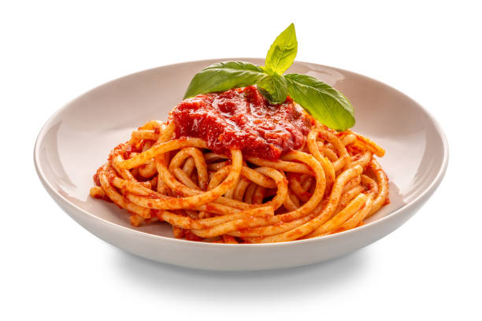

Spaghetti Recipe

Description
This is an easy to make spaghetti recipe with few ingredients.
You will be amazed how simple and simultaneously tasty a dish can be.
Ingredients
- Spaghetti
- Tomato sauce
- Parmesan cheese
- Garlic
- Olive oil
- Dried oregano, salt, and pepper
Steps
- Cook Spaghetti: Fill a large pot with cold water 3/4 full and boil. Add 2 teaspoons of salt and spaghetti. Keep cooking uncovered until al dente, stirring from time to time.
- Drain Pasta: Test, if the spaghetti are in fact al dente. Drain with a sieve or colander.
- Cook garlic: Return the pot to medium heat and add olive oil, 4 garlic cloves, and oregano. Cook for 20 seconds, stirring constantly. Garlic cooks fast and can easily burn, so don't walk away!
- Add remaining ingredients: Combine drained spaghetti, tomato sauce, remaining 1/2 teaspoon salt, ground black pepper, and 1 more fresh galic clove in same pot. Stir gently until warmed through. Sprinkle with Parmesan cheese and serve this spaghetti immediately!